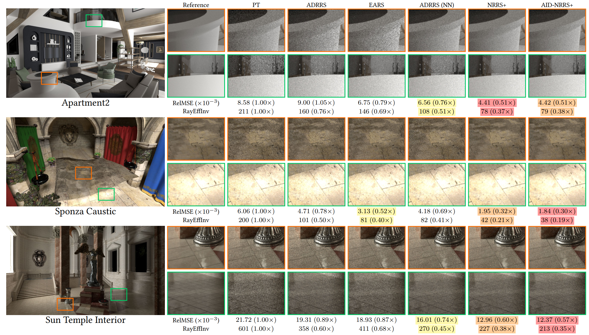

NRRS: Neural Russian Roulette and Splitting
We propose a novel framework for Russian Roulette and Splitting (RRS) tailored to wavefront path tracing, a highly parallel rendering architecture ...
IEEE Transactions on Visualization and Computer Graphics, 32(7): 7001-7016, 2026
